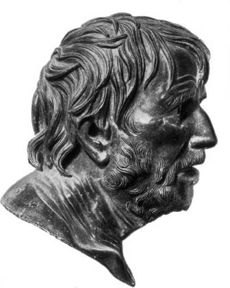
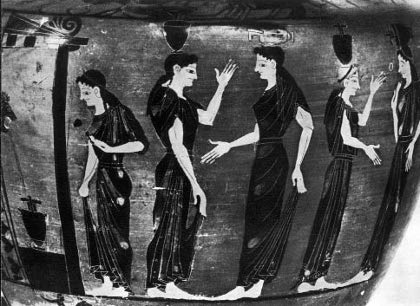
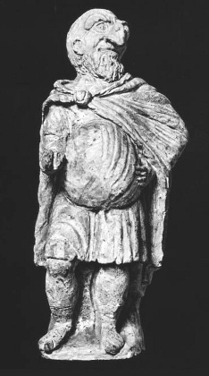

Aristophanes’in gülüşü: Olabildiğince Attikalı, daha fazla Galyalı, en kabasından bir gülüş mü? Hayır. Peki, dünyanın en ince, en hafif olanı diyebilir miyiz? Yine hayır. Belki de iki kez evet. Yani aynı zamanda tüm gülüşler birden. Şu iki kutupta yer alan gülüşler yani: Yergili gülüş ve neşeli gülüş. Aristophanes’in gülüşü tümüyle ikisi arasında gidip gelir.
Demek ki, başlıca iki gülüş var. Öfke niteliğinde olan birincisi, İ.Ö. V. yüzyılın sonunda Atina’nın içinde bulunduğu “toplumsal düzen” zemininde bol bol yetişen aptallıkları, saçmalıkları yırtan, parça parça eden bir gülüştür. Altınçağ artık kimsenin tamamlayamayacağı mermer başyapıtlar üretmekten yorulmuştur. Bunları parası ve emeği ile ödeyen imparatorluk dağılmaktadır. Anayurt, imparatorluğun parçalarını kan dökerek bir araya getirmeye boşuna uğraşır... Bu sırada, Dionysos (Gionisos) tiyatrosunun sahnesinde, yüzyılın tüm son çeyreğinde Aristophanes’in kahkahasının patladığı duyulur. Taşlama, emperyalist demokrasinin içine saplandığı çelişkileri sergiler; savaşın yol açtığı felaketleri, halkın yabanıl sefaletini sergiler, yalancı laf ebelerini, çıkarcı ve soyguncuları, övüngeç ve budala generalleri, safsata ve dalkavukluğun kandırdığı Egemen Halk’ın aptallığını aleme rezil eder; yeni eğitim düzeninin kötü yanlarını gözler önüne serer; dilin, eli kolu bağlı halk üzerindeki kör saltanatını aşağılayıcı sözle saptar. Bunları yaparken gülmekten ve sahneyi akrobat taklalarıyla doldurmaktan da geri kalmaz. İşte bu gülüş, bu kahkaha mizahi yergili gülüştür –yani karşı gülüş.
Ama bunu derken gülmeyi unutmayalım. Gülmek bizi yeniden, nesne sevgisine, kır sevgisine ve ekmek, şarap, barış gibi en insanca temel nimetler sevgisine kavuşturur. Gülmek içimizde ağaçların ve çiçeklerin güzelliğini, çiftlikteki ve ormandaki hayvanların ürkek sevimliliğini canlandırır; gülüşler kuşların anlatılmaz dilini konuşur. Gülüş “doğalca” yaptığımız el kol hareketleriyle birlikte, aşkın gel gitleriyle birlikte açılıp saçılan fizyolojik bir olaydır. Gülüş, sevincin lirik sesidir.
Mutlu insanın, yeryüzünde gün ışığında yalın yaşama sevinci olan bu gülüş, işte bu gülüş bizi, gerçeğin yeni baştan ele geçirildiği duygusuna kaptırır; açık havada yerçekimi yasalarına meydan okumuş gibi görünen son bir takla ile, inek derisi döşemede ayaklarımızın üstüne yeniden dikeltir bizi. Bu gülüş unutulan her türlü yergiyi, renkler ve biçimlerle parıltılı dünyada, etten kemikten insanda, yaşama sevincini, gerçekliğe sahip olma hazzını dile getirir. Dünyanın bunca güzelliğinin tam göbeğinde bir insan olma sevinci. Ve biz insan olduğumuz için güleriz. Aristoteles çok iyi söylemiştir: “İnsan gülmeyi bilen tek canlı varlıktır.” Gargantua’sının başına koymak üzere Rabelais’nin de çok doğru olarak dile getirdiği şey de budur: “Gülmektir insanı insan eden.”
Zaten birbirinden ayrılamaz bu iki –yergili ve lirik– gülüşün ortak işlevi, sağaltıcı etkileridir. Aristophanes kendini Atina toplumunun “okul öğretmeni”; halkının, gençlerinin eğitmeni sayar. Gülmek onun sağaltım yöntemi içinde yer alır. Yeniden el ele verilen sevinçle insan bütünlük kazanır, toplum dengesine kavuşur. Gülmede bir “katharsis”, bir arınma vardır. Bizi sağduyulu kılan gülme, bizi gerçek doğamıza kavuşturur. Biz hastaysak, bizi sağlıklı kılar.
Birbirine ayrılmaz biçimde bağlı olan bu iki tür Aristophanes gülüşünü, gerçek dünyadaki ve insan yüreğindeki birleşik ya da çelişik şeylerden kimse koparamaz. Bu gülüşler sözcükleri imledikleri nesnelerden ve adlandırdıkları eylemlerden ayrı tutmazlar. Örneğin savaştan tiksinmeyi, somut barış sevgisinden ayrı ele almazlar. İnsan ruhunu bedenden ayıramaz kimse, bedenden ayrılırsa eğer sakat kalır, zira ruh ve beden birbirine sıkıca bağlıdır; biri ötekinin soluğu gibidir.
Birbiriyle dayanışan bu iki gülüşün ikiz kaynağına uzanalım.
Yergi gülüşünün kökü her zaman, her yerde olan eski bir folklor içinde yer alır. Aristophanes’den önce, Yunanistan’da, özellikle de Dor ülkesinde –Sparta’da ve Megara’da– insanın, salt gülünç durumların taklidinden, salt komik duruma düşmelerden aldığı hazzın yarattığı doğaçlama halk güldürüleri vardır. İncelememizin yoksulluğuna karşın, Spartalı taklitçilerin ürkütücü ve komik maskeler takarak dişleri dökülmüş yaşlı kadınları, meyve ve et hırsızlarını, yabancı bilgiç hekimleri temsil ettiklerini biliyoruz. Oldukça yeni birtakım kazılar bu maskelerden bazılarını ortaya çıkarmıştır. Megara güldürüsünde, aralarında en tanınmışı olan, devanası-aşçı maskesi ve beraberinde bir maskeler koleksiyonu elden gelip geçer.
Komik maskelere ilişkilendirilen bu tipler Yunanistan’da doğmuşlardır. Bu tipik kişiler aynı zamanda, eski ve yeni bütün popüler komedyaları dolduran kişilerdir. Gerçekten de, Latin Atellan farslarının ya da Aristophanes ve Menandros’un komedyalarının kişilerine kardeş gibi benzeyen bazı tiplemelerle Commedia dell’arte cambaz tiyatrosunda, ya da Valois sarayında, ya da Brandebourg ya da İngiltere’nin köylerinde –hatta Molière ve Shakespeare’de– tekrar tekrar karşılaşmaktan daha ilginç bir şey yoktur. Aynı maddi ya da manevi gülünç durumlar, Soytarı Polichinelle’in kamburu ya da yabancı bir hekimin bozuk dili, insana özgü olan bu gülüşten başka ortak hiçbir şeyleri olmayan insanları yüzyıllar aralığında eğlendirirler.
Bu tiplerden bazılarını anımsamak Aristophanes’in komedyasını aydınlatacaktır.
Örneğin ukala, yabancı bilgiç hekimin maskesi. Bu tip, ukala kambur Dosennus adı altında Latin Atellan güldürülerinde de vardır. İtalyan sahnesinde kâh hukukçu, kâh hekim yani il dottore’dir: O her şeyi anasının karnında öğrenmiştir ve meramını bilgiç diliyle anlatır. Alman Puppenspiel’inde Dr. Faust adı altında bir keramet sahibi, bir şarlatandır. Molière’de Diafoirus, Desfonandrès ve ortaklarının oluşturduğu güruh, Shakespeare komedyasında ise zırvalama bölümlerinin bir Fransız fizikçiye ait olduğu sanılan Neşeli Kadınlar’ın olağanüstü Dr Caius’unu bunlar arasında sayabiliriz.
Popüler komedyanın başka bir tipi ise şehvet düşkünü, kıskanç ve cimri ihtiyardır. Atellan farslarında Pappus’dur bu, Plautus’da Euclion, Venedik’te Pantalon, Ben Jonson’da Volpone, daha sonra da, bizim klasik tiyatromuzda Harpagon ve Bartholo’dur. Gerçekten de, unutmayalım ki Harpagon’da cimrilik öne çıkarılmasına karşın o sadece cimri değildir: Onun gülünç aşklarında, oğluyla olan rekabetinde eski sefih Pantalon’dan[9] bazı izler buluruz.
Bazen pisboğaz, bazen de yırtıcı olan, koca ağızlı, uzun dişli dev aşçıdan daha önce söz etmiştim. Onun adı, Aristophanes’den daha eskilerde, Megara’da Meson’dur. Bu tip Latin Atellan maskaralıklarında Manducus, Puppenspiel’de obur, sarhoş, edepsiz –titrek umacı– Hans Wurst’dur. İtalyan komedyasında siyah zenci maskeli, bazen dişleri arasında koca bir bıçak tutan Arlequin’dir.
Aristoteles’in, Yunan Komedyasının başlıca kişileri olarak kendilerinden söz ettiği o önemli palavracılar güruhuna da değinelim. Bu palavracılar genellikle yalancı ve her zaman can sıkıcıdırlar. Çeşitli iddiaları ile Aristophanes komedyasının ikinci bölümünü doldururlar. Bunlar her yerde ödlek ve yeniktirler. Napoli Pulcinella’sı, Fransız Polichinelle’i çok kötek yemiş palavracılar ailesindendirler. Yine onlar, birkaç yıl önce, Kuzey Almanya’da hâlâ oynanan ilginç bir popüler dramanın, Kasperlspiel’in can sıkıcı kişileridirler. Kasperl, tıpkı Aristophanes’in Dikaiopolis (Gikalopolis) ya da Trygaios’u (Trigeos) gibi, sadece herkesle barış halinde yaşamak isteyen iyi bir adamdır. Bir vergi tahsildarı, Polonyalı bir işportacı, kendi karısı, kaynanası, şeytan, ölüm ve başka kişiler, hepsi şaka olarak değnekle kovalanan bir curcuna alayı yüzünden bunu başaramaz. Kasperlspiel’in senaryosu Aristophanes’in Akharn’lılar’ında (Aharnis), Barış’ında, Kuşlar’ında sıralanan üzücü dayaklara çok benzer.
Palavracı deyince, bunun dereceye layık özel bir türü vardır; palavracı asker. Savaşın yüzü, insanların tarihinde ne kadar yaygınsa onun maskesi de komedya tarihinde o kadar yaygındır. Plautus’da Miles gloriosus ve “Güçlü kentler alıcısı” (Pyrgopolinice), commedia dell’arte’de Capitan yani kahraman bozuntusu, İspanyol komedyasında Matamore böyledir. (Adı geçen bir Matamore kişiliği Corneille’in Yanılsama’sında yaşamayı sürdürür; Corneille burada olağanüstü ve çok hoş düşlerle komedyasını coşturur.) Fransız-İtalyan yaratımı Yüzbaşı Fracasse’ı da unutmayalım. Bunu geçiyorum.
Öteki maskeleri de bir yana bırakıyorum, örneğin uşak maskeleri.
Aristophanes tiyatrosu bu maskelerle ya da en azından böylesi maskelerin izini taşıyan kişi tiplemeleriyle doludur. Aristophanes hiç kuşkusuz daha önceki popüler komedyadan başlıcalarını belirttiğim komik tipleri –ukala, cimri ve sefih ihtiyar, dev aşçı, her türlü palavracılar– kalıt olarak almıştı. Bu geleneksel tiplere, zamanının Atina’sındaki tarihsel kişilikleri, seyir sırasında tiyatro basamaklarında oturan o zamanın insanlarını örnek tip alan maskeler kullanarak yenilik kazandırır. Ya da rolü için tam o kişiye uygun maske bulamazsa, hayalinde kurduğu tiplemeye, böyle bir maskenin telkin ettiği kişi karakterini verir.
Yalancı pehlivan maskesi onun tiyatrosuna iki önemli tipleme getirmiş gibidir. Birincisi, bütünüyle Atina emperyalizmine ve ondan doğan savaşa karşı, şairin yirmi yaşının komedyası Akharn’lılar’daki Lamakhos’dur. Bu Lamakhos daha sonra Sicilya seferinde yiğitçe vuruşarak ölen namuslu bir generaldi. Onun Yunancada açıkça Savaşçı demek olan bir ad taşımak gibi bir talihsizliği vardı. Aristophanes bu Savaşçı-Lamakhos’u Yüzbaşı Fracasse gibi giydirir, onu kar altında sınırdaki geçitleri korumaya gönderir ve gülünç bir maceranın kahramanı yapar; Lamakhos’un bileği çıkmıştır, iki askerin desteğinde döner. Aristophanes onun gülünç işinin öyküsünü tumturaklı epik tarzda anlatır; İphigeneia’nın gün ışığına veda etmesi gibi o da tolgasının tüyüne veda eder. Bütün bunlar, kendisi ve yakınları için ayrı bir barış imzalamış, bir içkiciler yarışının galibi olarak, çakırkeyf ve yarı çıplak iki kibar fahişenin kolunda evine dönen iyi yurttaş Dikaiopolis’in alaycı gözleri önünde geçer.
Palavracı asker maskesini takabilecek daha da önemli bir kişilik Kurbağalar’daki Aiskhylos’dur. Aiskhylos’u çok seven ve onunla dostça dalga geçen yergici Aristophanes’e göre o savaşçıların ve yalancı pehlivanların şairidir. Onun kahramanları “yalnızca kargılar, mızraklar, ak sorguçlu tolgalar, başlıklar, dizlikler, yedi öküz derisi giymiş ruhlarla soluk alırlar”. Ve o bununla övünür. Oyun stili savaşcı sözlerle belirlenir; ortada şiir olmadığında, yalancı pehlivan maskesi takar: “çatık kaşlı ve sorguçlu, umacı gibi bir stil, savaş atına tünemiş bir tip.”
Aristophanes, bilgiç ve kurnaz şair Euripides’e yaptığı gibi bu kez de çağdaşlarının en ünlülerinden biri olan gizemli bilge kişi Sokrates’e, ukala hekim maskesini giydirmiş gibidir. İnsanın ve doğanın esrarını ortaya dökmek iddiası ile, karşısındaki kişiyi şaşırtan ve afallatan bitmez tükenmez konuşmalarının içerdiği karşıtlıklarla, sahip olmadığını söylediği ve çarpıcı alaysamasının örtüsü altında gizlediği şu bilim ile Sokrates, Atina halkı için sadece bir sevimli hokkabazdır: Bilge kişi değildir o, safsatacıların da safsatacısıdır. Aydın ve “ince dilli, sözcük seçen, akılcı titizlikleriyle her türlü yüce esini, her tür deha çabasını yıkan” şair Euripides’e gelince o da havası boşaltılacak bir başka sahtekârdır... Euripides ve Sokrates, ikisinin de “yabancı bilgiç hekim” maskesini anımsatırlar tabii ki, bunda da haklıdırlar.
Dev-aşçı maskesi de Atlılar adlı komedyada şöylece iki kez gözükür: Açgözlü dev maskesi ile bundan türeme obur asalak maskesi. Dev maskesi, oyunun başlıca kişisinin, meslekten domuz kasabı ve talihinin cilvesi sonucu demagog olan korkunç Agorakrites tiplemesinin ortaya çıkmasını sağlar. Bu, okuması yazması olmayan ama farfara söylevcide, birçok özellik bir umacı aşçıyı ortaya çıkarmaktadır. Dediğine göre, çocukluğunda aşçı yamağıymış. “Haşlama teknelerinde yumrukla eğitildim... Bakın hele çocuklar, görmüyor musunuz? İlkbahar gelmiş, işte bir kırlangıç, diyerek kandırıyordum aşçıları. Onlar bakadursun, ben o sırada bir parça et aşırıyordum.” Kişinin en hoş imgeleri mutfağa ilişkin imgelerdir. “Ey halkım, eğer ben seni sevmiyorsam, hem de candan sevmiyorsam kuşbaşı doğranayım da tas kebabı olayım! Sen sözlerime inanmıyorsan işte şu masada bir çanağa peynirle birlikte rendeleneyim!” Agorakrites domuz kasaplığından politikaya geçince aynı mesleği sürdürür. “Halkı yönetmek, der, çok basit bir iştir: İşleri bütünüyle birbirine katmak, karıştırmak, harman etmek, ahaliyi şeker gibi sözcüklerle elde etmek, bir yahni nasıl yapılırsa öyle konuşmak.” Agorakrites’de müthiş bir dev iştahı vardır. “Bana bir öküz şirdeni ile bir domuz işkembesi getirsinler! Bunları gövdeye indirdikten, üstüne de suyunu içtikten sonra; ağzımı silmeden nutuk atanların ağzının payını veririm.” Demos’un sevgisinde rakibini alt etmeyi başarmışsa, bunun yine bir mutfak yarışmasında olduğuna dikkat edelim. Nihayet, komedyanın sonunda bir aşçılık hüneri ile Demos’u yani Egemen Halk’ı gençleştirir. “Size Demos’u pişirdim ve çirkinden güzel kıldım...”
Demek ki Atlılar’daki bu parlak Agorakrites yaratısının hareket noktası Megara’lı dev-aşçı Meson maskesinin varlığıdır. Aristophanes’in maskeyi çağının siyasal gerçekliğinden alınma taptaze renklerle yeniden boyamış olması apaçıktır ama bu tamamen başka bir şey, onun şu anda benim konum olmayan dehasının bir başka yönüdür.
Yine bu Atlılar’da bir başka kişiyi, Agorakrites’in rakibi, Paflagonyalı köle Kleon’u gösterebilirim. Bu kişi bir ölçüde Aristophanes’den önce gerçekleştirilmiştir ve yine dev-aşçıdan kaynaklanan ama belli bir farklılık da gösteren popüler komedya tiplemelerinden biri olarak ortaya çıkmıştır. Bu tip korkunç değil, ama çıkarcıdır; asalak ve dalkavuktur.
Atlılar’daki Kleon, Demos adlı zengin bir burjuvanın evine sokulan bir köledir. Atina’da herkesçe bilinen çok açık bir simgedir. Kleon dalkavuklukla ve gerektiğinde efendisinin arkasına bir yastık koymak ya da efendi sümkürdüğünde, parmaklarını kurulasın diye saçlarını sunmak gibi, durmadan ufak tefek hizmetlerde bulunarak onu yönetir. Becerikli asalak sonunda evin kâhyası olur ve bu ev, Atina halkının evi olduğundan, bir burjuva evinin çanak yalayıcısı, benzetme ve eğretilemelerle, Atina demokrasisinin sömürücüsü gibi gösterilir. Şairin, asalak tipini özel plandan kamusal plana aktarmasından çıkardığı olağanüstü yararın üzerinde durmuyorum. Benim için onun keşfinin olası kökenini göstermek yeterlidir: Bir asalak maskesi, Cumhuriyetin çıkarcı siması haline gelmektedir.
Yergi gülüşünün kökenleri konusunda söyleyebileceklerim işte bunlar. Bu gülüşün kökü, daha önce de dediğim gibi, yüzyıllar boyunca komedyayı besleyen ve daha da besleyecek olan eski halk gelenekleri içinde derinlerdedir. Aristophanesin yergici oyunlarının parlak gelişimini gözler önüne sermek, şairin yüreğinde homurdanan ve onu kavuran bu ateşli öfkeyi, demokratik kurumların pek yakın çözülmesine ve özel ve kamusal törelerin daha şimdiden tehditkâr biçimde yıpratılmasına karşı duyulan bu büyük tepkiyi açıklamak için daha ne gerekir? Olduğu haliyle ve yaşadığı bozulmayla şu Atina dünyasını reddeden bu öfkenin varlığı, geçmişin kalıtı olan maskelerin ve tiplemelerin yeniden ele alınması için özlü bir can damarı oluşturur.
Ama öfke gülüşlerinin yanı sıra, ona sıkı sıkıya bağlı sevinç gülüşleri de vardır. Bu gülüş nereden gelir?
Bu gülüş Attika kırsalındaki köy şenliklerinden gelir. Rüzgârda koşan ve birbirini yakalayan, saçları dağınık, kızarmış ellerinde testilerle çalışanlara yanaşan kızların gülüşüdür bu. Bayram günlerinde ya da yağmurlu günlerde ocağın yanında dostlarla birlikte içilen hafif şaraba katılan gülüştür. Bu gülüşü şöylece bir dinlemek gerek:
“Ne zevk, ama ne zevk
kurtulmak sonunda tolgadan, peynirden ve soğandan,
savaşı hiç sevmediğimi söylemem gerek.
Ocağın yanında oturup, en kuru odunumu,
Yazın söktüğüm kütükleri yakarak
Dostlarla şarap içmeyi severim ben;
severim nohut kavurmayı, kayın kozalağı kızartmayı
Thratta’yı becermeyi karım yıkanırken.
Ekini ektin mi, yağmuru Tanrıya bırak,
ne hoş şeydir ama, komşunun çağrısını duymak:
– Hey dostum Komarkhides,
ne yapacağız şimdi? Doğrusu ben,
bir kadeh içmek isterim, tanrı bize iyilik ederken.
Haydi, kocakarı, kızart fasulyeleri
karıştırıp buğday taneleriyle, sonra getir incirleri,
Syra’ya söyle de Manes’i çağırsın tarladan.
Bugün bağı budamanın alemi yok,
yer ıslak olduğundan toprağı sürmenin de.
– Benim evden, der başka biri,
ardıç kuşu ile iki ispinoz getirsinler.
Ayran da vardı ve gelincik dün akşam yürütmediyse
dört parça da tavşan eti.
İçerde bir tuhaf takırtı duydum da.
Çocuk, getir onlardan bize üç tane
ve birini babaya bırak. Sonra, Eskinades’den
mersinlerden iste, iste versin meyveli dallarından ve geçerken
Karinades’i çağır gelip kadeh tokuştursun bizimle,
madem iyi çalışıyor tanrı ve yararlı oluyor bize.
– Cırcırböceği duyurunca hoş şarkısını
gidip bağlarımı görmekten hoşlanırım,
Lemnos’daki fidelerim, yetiştiler mi diye,
Genç incir büyümüş mü bakmayı severim,
derken, olgunlaşınca
ağzıma götürür dişlerim onu,
bir yandan mırıldanıp “Sevgili Mevsimler”i
kendime bir dövülmüş kekik demlerim
ve semiririm yazın bu döneminde.”
Aristophanes bir köy çocuğudur. Akharn’lılar’a bakılırsa, Aigina adasında yerel bir tanrıça için, yıkıntılar, zeytin ve çam ağaçları arasında hâlâ yolcuları çağıran şu tapınağın dikildiği sıralar dünyaya gelmiştir. Babasının kuşkusuz Aigina’da küçük bir mülkü vardı. Aristophanes bu adada ticaret yaptı, tüm yapıtında savunduğu biçimde kırsal yaşamla iç içeydi; tarlaların ve bahçenin çiçeklerini, kuşların tüm adlarını, tüm ötüşlerini tanımayı burada öğrendi. Çalılıklar perisi Musaların çağrısını, cıvıltı içinde duydu. Temizce silinmiş metal kısmı güneşte parıldayan ve köylünün içini sevinçle dolduran beli ve çapayı kullandı. Mülk sahibi ile ailesinin ürünü artırmak için, üremenin simgesi olan canlı renklerle süslenmiş koca bir “phallos”u (falos) saf saf tarlaların ve bağların çevresinde gezdirdikleri o çok önemli ve neşeli şenliklere katıldı. Aristoteles’in eski Attika komedyasının kökenini onda gördüğü, şu erkeklik organı şarkısını, mülk sahibi savaştan mülküne dönünce, söyleyişine kulak verin:
“Phales, Bakkhos’un yoldaşı,
neşeli konuk, gece kuşu,
kadın avcısı, yakışıklı âşığı oğlanların,
sonunda, beş yıl gittikten sonra,
dönüp köyüme sevinçle selamlıyorum seni,
barış yaptım artık,
yalnızca kendim ve de yakınlarım için,
kurtuldum kaygılardan, kavgalardan, savaştan.
Çok daha hoş değil mi,
Phales, sevgili dostum,
çakalozun tahta kanadını tutmak yerine,
Thratta’yı, Strymodoros’un (Strimodoros) kölesini,
bilirsin, şu körpe oduncu kızı
yakalamak belinden,
devirmek onu yere
ve çıkarmak çekirdeğini...
Phales, sevgili Phales,
bu akşam gelip bizimle içersen,
yarın, baş ağrını gidermek için,
gün doğarken, bir barış kadehi sunarım sana
ve birlikte asarız kalkanımı
ocak davlumbazının altına.”
Aristoteles (Aristo) komedyanın kaynaklarından birini bu “penis şarkıları”nda görmekte haklıdır. Böylesi şarkılar, şakalarla süslenmiş olsalar bile, en sağlıklı komik damarı, İlyada tanrılarının cennetsi dinginliğindeki yaşama sevincini, onların “günah”tan da önce, yasadan da önce gelen Homerosçu gülüşlerinin şakımasını toptan bir araya getirebilirler.
Aristophanes genç yaşında kente geldi. Kentte çabucak ünlendi, aynı zamanda (dediğine göre) kel oldu: Köyde geçen çocukluğunu hiç unutmadı. Kentteki insanlarla, köylü gülüşüyle dalga geçer, onların budalalıkları ve kötülükleriyle ince ince alay eder. Kötü yurttaşlar, kendini beğenmişler, gösterişçiler ve budalalar onu öfkelendirebilirler, ama neşesini yok edemeyeceklerdir.
Aristophanes’in komedyasındaki çok büyük üslup çeşitliliğini sezmeye başlıyor muyuz? Bu komedyanın hem yergici hem de lirik olduğunu söylemek az gelir. Hırçın öfkeyle yüklü, sarakalar ve sövgülerle dolup taşan, ders veren, hem güçlülerin hem de halkın tüm kusurlarını yüzlerine çarpabilen, en bayağı pisliğe bulanan bu komedya, müstehcenlikten hoşlanır, bunu şiirle taçlandırır. Bu komedyanın gülüşü, yakınlardaki bir meyhane kahkahasını sanki en ince alay, en nadir mizah, en etkili taklit ile doldurur. Bununla birlikte, bu üslup alacası içinde her şey yaratıcısının markasını, yalnız ona ait olan bir markayı taşır.
Aristophanes’in komik buluşunun özelliği, öncelikle acayip melezler, şiirsel tuhaf hayvanlar, örneğin hem eşekarısı hem de yargıç olan garip melez kişilerin yaratımında yatar; bunlar bize karikatürsü doğrularını, hem eşekarılarının hem de yargıçların doğrularını, yani mahkûm eden bir manyak ve kötü yargıcı ve bunu açığa çıkararak vızıldayan ve sokan eşekarısını, ikisini birden bize kabul ettirirler. Aristophanes yalancı pehlivanı Aiskhylos’a, koca devi demagoga ya da Euripides’i güzel Helen’e, ya da düşçü Andromeda’ya aşıladığı gibi eşekarısını yargıca aşılar. İşte tümen tümen gerçek ve gülünç kişiler böyle doğarlar: Düşsel dünyada yaratılan canavarlar, aynı gerçek kişilikler gibi olabilmektedirler. Ve bu, şairin onları içine soktuğu olay sayesinde gerçekleşir.
Aristophanes gerçekten, yalnızca ve özellikle olağanüstü bir kişilik mucidi değil, her şeyden önce inanılmaz bir komik olay mucididir. Saçma bir durumdan, mantığa aykırı, toplumsal ya da ahlaki denge yasalarına meydan okuyan bir durumdan yola çıkmayan bir komedisi yok gibidir.
Olayın kurgusu gerçekliğe göre hafif bir farklılık gösterir; dünyamıza aynı zamanda hem benzeyen hem de ondan farklı olan bir dünyaya götürür bizi. Aristophanes komedilerinde, doğa yasalarının, akıl ilkelerinin tam olarak bizimkinde olduğu gibi işlemedikleri bir dizi dünya uydurur. Sanki bizi, yerçekimi yasası farklı olduğundan, hiç çaba göstermeden inanılmaz sıçramalar yapacağımız, büyük ağırlıklar kaldırabileceğimiz bir gezegene götürmekle eğleniyor gibidir. Aristophanes’in kişileri, onlar için yaratılan dünyada ve yalnız o dünyada bizler için oraya ait bozulmamış gerçeklerdir. Onların davranışlarındaki tuhaflık birden bizimle özdeşleşir. Çok doğal buluruz.
Böylece şair, savaşın Atina’yı üzüntülere garkettiği, köylerini yakıp yıktığı İ.Ö. V. yüzyılın son çeyreğinde, üç kez, hemşehrilerine taptaze bir barış vermek için yeni bir icat düşler. Ona göre Atina’nın en doğal gerçekliğine, onu savaşın pisliğinden arıtacak, savaş illetinden kurtaracak birkaç ellabore[10] çiçeği tohumu atmak iyi gelecektir. Aristophanes bu arada aynı sert çıkışla seyircisini, tatlı bir keyifle sendeleyen yurttaşlar topluluğunu düşsel gerçek bir dünyaya –başka bir çılgınlığı, barış çılgınlığını barındıran bir dünyaya– sokar. Çok güzel bir isim taşıyan bu çılgınlık dünyası, şiirin büyüleyici etkisiyle insanları kendine çekecektir. Sonunda onlar da kendilerini büyüleyen bu bambaşka gerçeklik türüne kanacaklardır. En sevgili düşlerine yaşam olanağı veren şairle işbirliğine gideceklerdir. Aristophanes insanların, bir gün gelip barış içinde yaşamalarını, bayram günlerinde, ailecek kırda gezinir gibi, barış içinde gezinmelerini ister.
Şimdi bu icatlar neymiş görelim:
Akharn’lılar arasında (425 ilkbaharında, Atina halkı için savaşın altıncı yılındayız) Mecliste barış önerilerinin yüce görevlilerce iplenmediğini, kandırılmış halk tarafından da yuhalandığını gören namuslu köylü Dikaiopolis şu çok basit, şu akıl almaz düşünceye varır: Peki, ben kendi başıma barış yapsam olmaz mı! Dikaiopolis karar vermiştir ve köyüne döner. Hemen bütün mallar onun pazarına akar: Megara’dan domuz yavruları, Boitoia’dan yılanbalıkları ve dahası bol bol gelir arkadan. Dikaiopolis daha önce halkın önünde savaşın sorumlularını ve en başta, soğan başı biçiminde Olympos’lu kafatasıyla, Attika limanlarını Megara’lılara kapatan, Atina’yı aç bırakan, Megara’yı mahveden, bütün Yunanistan’ı altüst eden uğursuz kararnameyi tasarlayan Perikles’i de elbette suçlamıştır. Bütün bunlar işletmeci olarak, Perikles’in gözdesi Aspasia’nın başında bulunduğu bir genelevden kaldırılan orta malı kızların öyküsü içinde verilir... “Ve işte birkaç diş sarımsak ile üç orospuya karşılık ateş içinde tüm Yunanistan!”
Dikaiopolis buna aldırmaz. “Kişiye özel” barışının içine kurulmuş, savaş sayıklamasıyla tutuşan düşmanlarını, aksi huylu ve harap bağları nedeniyle onu taşa tutmak isteyen bağcıları, savaş propagandasının yalanları yüzünden intikamcı öfke ve gururla gözü kör olmuş kentlileri alt eder. “Kendi başına barış yapan” adam, Aristophanes’in onun sitesine karşı başlattığı kavgayı kazanır. O bu mücadeleyi aklıyla, maskaralık ve hınzırlığıyla kazanmıştır. Buna çok sevinir. Sevinci bir neşe fırtınası gibi patlar sahnede... Hemşehrilerinin onu örnek almaktan başka çareleri yoktur.

Aristofanes. Bronz baş. Yaklaşık 200 yılında
tarihlenen ünlü bir özgün yapıtın repliki.
Aristophanes’in buluşu böylece Atina’nın tarihsel ve gündelik gerçekliğine uygun düşer. Megara’ya karşı hazırlanan kararname tarihçi Thukydides tarafından doğrulanmış ve onun tarafından savaşa yol açan diplomatik durumun anahtarı olarak gösterilmiştir. Ama Aristophanes’in yaratısı bu gerçekliği önce karikatür biçimiyle, sonra düşsellik içinde yeniden oluşturur; şair bunu hem tat alması hem de düşünmesi için seyircisine önerir. Olaydaki saçmalık ve zaman zaman kurgulama olayın şiiri içinde, kandırılan halkın budalaca sürmesine izin verdiği ve pekiştirdiği şekliyle politik gerçeğin bayağılığını ve gülünçlüğünü sayar döker.
İ.Ö. 411 yılında, özellikle sitelerin aralarında kapıştığı kapkara bir dönemde temsil edilen, savaşa karşı bir başka komedya da Lysistrata’dır (Lisistrati). Aristophanes Peloponesos savaşı adını verdiğimiz ve ilkçağın ilk “dünya savaşı”ndan başka bir şey olmayan çatışmaya sürüklenen halk, kitlelerinin acısını bilmez değildir. Yunan dünyasında her yerde yayılan ve savaşın patlak vermesinden bu yana yirmi yıldır durmadan artan ölçüde dökülen kan, açlık, sefalet karşısında, Aristophanes olabilecek en açık saçık ve en gülünç komedya olayını düşleyerek cesaretle karşılık verdi. Güçlü cinsin (erkekler) bir icadı olan –aklımızdan çıkarmayalım– savaşı rezil etmek, lanetlemek, lekelemek için ve aynı zamanda, her türlü dar milliyetcilikten sıyrılabilmiş şair, tüm Yunanlılara, Sicilya’dan İran’a kadar bilinen dünyanın bütün insanlarına halkların istediği insan kardeşliğinin buyurgan çağrısını duyurmak istediği için Aristophanes yapıtının odağına kadınlara seslenen bir kadın koydu. Aklına koyduğunu yapan, yüce gönüllü bu kadın Atinalı Lysistrata’dır. Şair bu ileri gelen kadının itkisiyle savaşan ülkelerin bütün kadınlarının erkeklerin uğursuz aptallığına karşı birleşeceklerini ve gülünç bir törensel yeminle desteklenecek olan çok basit bir karar alacaklarını varsayar: Kocalarına karşı, âşıklarına karşı aşk konusunda genel grev yapacaklardır. Aristophanes görüldüğü gibi burada fizyoloji yasalarını bir süreliğine rafa kaldırmayı düşlemektedir. Bütün kadınlar barış aşkıyla erkekleri nefis egemenliğine zorlasalardı ne olurdu dersiniz? İşte, Aristophanes’in yarattığı ve bize önerdiği dünyanın karşılık verdiği soru budur. Olağanüstü bir dünyadır bu! İzinli askerler için ne azaptır, Akropolis’i dolduran kadınlarla görüşmeler yapmakla görevli yüksek makamlar için ne azaptır! Belirgin bir biçimde betimler, bütün açıklığıyla sahnede gösterir, ne azap ama!.. Gülüş ve öfke hep birlikte tiyatronun basamaklarında dalga dalga yayılır. İcat edilen durum, dahiyane basitliği ile çok cesur, hatta müstehcen denilebilecek birtakım sahnelere fırsat verir; ama bu o kadar neşeli, o kadar sağlıklı bir müstehcenliktir ki bundan neşelenemeyecek erkek de, kadın da yoktur. Büyük bir doğal yasanın kadınlarca bozuluşunun sonuçları kesin bir biçimde gelişir. Şairin değil de Lysistrata’nın beklemediği bu sonuçlardan biri, kadınların kendi oyunlarına gelmeleridir. Çeşitli ve gülünç bahanelerle, daha önce yapmamaya yemin ettikleri ama şimdi olmayışına üzüldükleri şeyi, her biri kocasıyla yapmak üzere, kadınlar kampından ayrılmaya çalışanlar görülür. “Eve gitmek istiyorum, der biri; “Miletos yünüm var biraz, kurtlara yem oluyor... Yalnız onları yatağa serecek kadar bir süre...” Bir başkası şöyle der: “Hamileyim, sancı çekiyorum...” Lysistrata bütün kurnazlıkları ortaya çıkarır: Birinci kadına “Yatağına hiçbir şey sermeyeceksin.” İkincisine de “Dün hamile değildin!” der. Kuşkulu karnı yoklar. “Karnındaki sert şey ne?” - “Bir küçük oğlan” diye karşılık verir öbürü. “Aman! Çok komik, der Lysistrata, ve giysinin altından tunçtan bir çukur nesne çıkarır, Athena’nın kutsal başlığı!” Lysistrata hepsini baba evine geri getirir. Buna karşılık, bazı kadınlar onları aramaya gelen, açıkça “Aphrodite tutkusuyla delirmiş” kocaları tedirgin etmekten, onları üzüm üzüm üzmekten şeytanca bir zevk alırlar. Cilveli Myrhine belki yirminci kez kocası Kinesias’a teslim olmak üzeredir, ama yapamaz. Yatak yerine geçecek bir şey gerekir. Olmadı! Sonra bir hasır. Yeniden gider. Sonra bir güzel koku getirecektir canım! En sonu, soyunur; ama “sevgilim, barış için oy vermeyi unutma” deyip ortadan kaybolur.
Sonunda barış kazanır ve hem iki cins, hem de savaşan halklar şarkılar söyleyerek birbirleriyle barışırlar.
Bir kez daha müstehcen bir oyun, belki de bir tiyatro sahnesinde görülmemiş çok müstehcen bir oyundur bu. Ama yine de hovardaca diyemeyiz. Lysistrata’da baştan çıkaran ve ahlak bozukluğuna iten hiçbir şey yoktur. Yapıt, tüm insanlarda derinlemesine yer etmiş duygularla dalga geçerek oluşturulmuştur: Bedensel aşk ve insanın bundan aldığı zevk olmadan bir türlü sürekli olmayan –bu biline– barış sevgisi ve daha yalın biçimiyle yaşam sevgisidir bu.
Lysistrata’nın gülüşü Yunan halkının yaşamsal sağlığını, dahası insan türünün sağlığını dile getirmektedir.
Yazarımızın savaşa karşı olan en iyi oyunlarından bir diğeri, her ne kadar uzun sürmeyecek olsa da, pek yakındaki 421 tarihli ateşkes antlaşması ile çoktan sevinmeyi hak etmiş bir köylü komedyasıdır. Lysistrata’dan önce yazılan bu komedya düpedüz Barış adını taşımaktadır.

Çeşme başında gevezelik eden genç kızlar.
VI. yüzyılın bir Atina amforasından ayrıntı.
Trygaios adını (yeni şarap tadan demektir) taşıyan ve hep yapılacağı söylenen ama hiç yapılmayan barış konusunda, politikacı lakırdılarından bıkıp, kendi başına Barışı gökte, Olympos’ta aramaya karar veren bir bağcının öyküsüdür bu. İnsanlar durmadan barışı çiğnedikleri için o da gerçekten Olympos’a çekilmiştir. Ama başına bir felaket gelir: Savaş umacısı olan Polemos adındaki korkunç dev onu bir mağaranın dibine hapsetmiştir. Tanrılara gelince, onlar artık insanların işine karışmazlar: Zira insanlar, yaptıkları savaşlara bakarsanız hiç kuşkusuz aptalın tekidirler! Tanrılar Olympos’tan ayrılmış ve gökkubbenin tam tepesine taşınmışlardır. Onlardan biri, Hermes, kap kacağa bekçilik etmek için kalmıştır; açıkçası kapıcılık eder.
Şairin bu yeni buluşu yalınlığı ve saçmalığı ile dikkati çeker. Barış göktedir: Trygaios gidip onu orada bulacak ve yeryüzüne getirecektir. Zeus’un sarayına varmak için, çocukluğunda dinlediği bir masalı anımsayıp –bu masalı La Fontaine yinelemiştir– onu uzaya götürecek koca bir domuzlan böceğine biner. Domuzlan, sığır gübresi ve dışkı ile beslendiği için bokböceği de denir ona. Trygaios böceklerden birini yakalamıştır; onu bu şekliyle iki köleye besletir. Kölelerden birinin soluğu yarı tıkalı olduğu için seyircilerden deliksiz bir burun istemektedir.
Bir de sahnelemeyi gözünüzde canlandırsanız ya! Sahne iki bölüme ayrılmıştır: Seyircinin sağında Trygaios’un çiftliği, solda ise tanrıların sarayı ile Olympos vardır. Bu iki ev arasında, iri kayalarla tıkanmış geniş bir mağara ağzı bulunmaktadır. Trygaios’u çiftliği önünde domuzlan böceğine bindirir ve bir tiyatro makinesi yardımı ile ona havada bir yarım daire çizdirir. Bu sırada onun gökyüzünde yükseldiğini görünce çok şaşıran küçük kızları babalarına iyi yolculuklar diler ve dönüşünde Trygaios’un kendilerine söz verdiği börek ve şapkaları beklemeye koyulurlar. Sonunda makine Trygaios’u Zeus’un kapısının önüne bırakır. Bizimki işe koyulur, Barışı mağarasından çıkarmaya çalışır. Savaş halindeki Yunanistan dahil tüm ülkelerden gelen insanlardan oluşan komedya korosu ona yardım eder. Bu, birbirleriyle savaşan bütün halkların barışı istediklerini Aristophanes’in bildiğini gösterir. Trygaios orada özellikle köylülerin, zanaatçıların, işçilerin ve tüccarların bulunduğunu belirtir. Bu yiğit insanlar, büyük bir eziyetle, mağaranın girişini açarlar. Ama göründüğüne göre bir kuyunun ta dibine gömülmüş Barış’ı kalın bir iple çekerek ışığa çıkarmak da gerekecektir. Ne ki tüm insanlar aynı şevkle ipe asılmazlar. Trygaios, tembelleri azarlar, her birinin politik ilişkilerine uygun şakalar yapar. En sonu, “haydi hop, haydi çek!..” diye diye barış tanrıçası karanlıktan çıkar. Bu bir heykeldir ama yanında doğanın onlara doğarlarken verdiği sade giysi içinde ve etten kemikten (özellikle etten) iki güzel kız vardır. Biri ekinlerin ve meyvelerin tanrıçası, sonbahar olgunluğunun tanrıçası Opôra’dır (Opora); öbürü bereketin, yiyip içilen şenliklerin tanrıçası Theoria’dır (Teoria). Atinalılar savaşın sürüp gittiği on yıl boyunca acı çekerek ekmekten, meyveden ve şenliklerden yoksun kalmışlardır.
Trygaios bu görüntüyü şiirin, şakanın ve yerginin şükran ve güzel günler vaadi ile dolu sevimli bir karma oluşturdukları lirik bir heyecanla selamlar. Şöyle söyler:
“Ey yüce Tanrıça, sen ki üzümü veresin bize
Nasıl günaydın demeliyim sana? Selamlamak için seni
On bin anfora kadar geniş sözcüğü nerde bulayım?
O kadar büyük sözcüğü bilmem ben!
Selam Opôra, Theoria sana da selam!
Yüzün ne kadar güzel Theoria!
Ya soluğun! Ne kadar tatlı ve hoş gelir yüreğe!
Savaş sonu gibi kokuyor, balsam kokuyor...”
Orda bulunan Hermes –basit insanların dostu, çok popüler bir tanrıdır– şöyle sorar: “Asker torbasının kokusuna benzemiyor mu?” Trygaios Pöf! diye karşılık verir. “Soğan yiyenin geğirmesi gibidir o.”
“Buysa hasat mevsimi,
konukseverlik, Dionysos şenlikleri, flütler,
tragedya şairleri, Sophokles’in şarkıları, kızartılmış ardıç kuşları
Euripides’in mayhoş dizeleri...
sarmaşık, küspeli kevgir, meleyen koyunlar,
tarlalarda yarış yapan kadınların gerdanı,
sarhoş hizmetçi kadın, devrik şarap testisi
ve daha bir sürü iyi şey gibi güzel kokuyor.”
Hermes aralarında barış yapmış siteleri gösterir: “Bak dost siteler nasıl aralarında şakalaşıyorlar ve kahkahalarla gülüyorlar, hepsi hoşnut.”
Barış yeniden bulunmuştur. Herkes tarlalarda çalışabilecektir. Trygaios bunun için şimdiden keyiflenir.
Komedyanın ikinci bölümü bizi Opôra ile evlenmeyi aklına koyan Trygaios’un düğününe götürür. Düğün şakalarla dopdolu geçer. Ama birçok oyun bozan yüzünden aynı zamanda sıkıntılıdır da. Örneğin, cenaze marşları ile yakınmaya gelen silah yapımcıları vardır. Silahçı, zırh yapımcısı, kargı satıcı, borazan yapımcısı, her birinin elinde uzmanlık nesneleri olduğu halde, tam bir sürü halinde çıkagelirler. Trygaios silahları sanki ev işleri için satın alıyormuş gibi yaparak onları tatlılıkla ama yılmadan başından savar. Yapılacak hiçbir şey yoktur: Savaş silahı işe yaramaz bir alettir artık. Yalnız bağcı tarafından kargılar alıkonur. Bir drahmiye bunlardan yüz tane alır ve der ki: “İkiye keser, herek yaparız bunları!”
Düğünde okulun çocuklarına şarkı söyletmek de isterler. Ama çocuklar yalnız askeri marşları bilmektedirler, bunlar da Trygaios’u öfkeden çılgına çevirirler.
Komedya büyük bir eğlenceyle tamamlanır.
Aristophanes’in barış adına icat ettiği komedya konuları bunlardır. Son derece düşsel, imgelemle yaratılmış olsalar da bunlar gerçekten pek fazla ayrılmazlar. Tam tersine bize en derin gerekliliği ile gerçeği daha iyi tanıtırlar; tarihinin bu anında Yunan halkının istediği şey ise barıştır.
Aristophanes inatçı bir gerçekçidir: İçinde yaşanılan anın gerçekliğini tasvirle yetinmez, halkının istediğini, geleceğin, en uzak geleceğin gerçekliğini araştırması ve tanıtması da gerekmektedir. Bunu imgelem yoluyla keşfeder. Düşsel konuları onun komedyasının bir tür hava araştırma makinesi haline getirirler. Hem de bu yalnızca barış üstüne yazdığı oyunları için değil, başka birçokları için de geçerlidir.
Gerçeklikten çok daha uzaklaşmış, havalanmış ve şiir olarak çok daha coşmuş gibi görünen bir Aristophanes komedyası daha vardır ki Kuşlar adlı komedyası ya da şiiridir diyelim. Sicilya felaketi ile yıkılan, iç kavgalarla her zamankinden çok tüketilen, sefaletle kemirilmiş Atina’nın eski ve yeni düşmanlarının ve kendi imparatorluğunda başkaldıran sitelerin ona karşı hazırladıkları son saldırıya göğüs germeye hazırlandığı bir sırada Aristophanes hemşehrilerine hayran olunacak bir dünya, bir gülüş ve sevinç dünyası sunmak üzere öne çıkar. Bu hiç de onlara bir kaçış olanağı, biraz unutma zamanı sağlamak için değil, onlara bir “cennet”i (sözcük güzel bir bahçeyi belirtir); insanların her zaman kavuşabilecekleri tek şeyi; onlara hem çalışma hem çalışmanın meyvelerini, gıdaları ve dinlenmeyi sağlayan tek şeyi; özellikle de Yunanlıların insanların ilk kardeşliğini, hayvanların dostluğunu, tanrılarla düşüp kalkmayı yeniden başarabildikleri tek şeyi armağan etmek içindir. Bu cennet doğadır. Aristophanes burada çocukluğunun tadını bir kez daha çıkarır. Atinalıların önüne, yeniden bulduğu altınçağı açar.
Göreceğimiz gibi, bunu hoş bir buluşla yapar. Ama Atinalılar için tarihlerinin bu kötü döneminde, Kuşlar’ın gülüşünden daha önemli, daha ciddi bir şey yok mudur?

Latin Atellanlarından komedya kişisi–belki Dosennus.
Bir gün iki iyi yurttaş Atina’dan bıktıklarını saptarlar. Sitelerinden nefret etmelerine ramak kalmıştır. Onlardan biri olan Evelpides tatlı tatlı şöyle der: “Para cezalarını ödemek isteyen herkese açık bir kent bu. Cırcırböcekleri ağaçların dallarına tüneyip yılda bir iki ay dinletirler ötüşlerini. Atinalılar ise, davalara tüneyip, hiç ara vermeden, ömürleri boyunca ötüp dururlar.” (Bu davalar profesyonel muhbirlerin, Atina’nın içinde bulunduğu tehlikeli koşullarda, tüm kuşkulu yurttaşlara karşı açtıkları politik davalardır.)
Neyse, Evelpides ile Piseteres bıkmışlar, hem de fazlasıyla bıkmışlardır. Adi politikacı Atina’sından, Aristophanes’in çoktan bozulmaya başladığını bildiği Atina’nın iftira ve yaygaralarından bıkmışlardır. Onları, kırda, orman kenarında, “sere serpe yayılacak ve yumuşacık bir kürkün üstünde dinlenir gibi dinlenecekleri yünü andıran bir kent” ararlarken görürüz. Onlar fesatsız, dolandırmasız, davasız, borçsuz ve hele parasız bir kent, içinde yaşamın bir bayram günü gibi tadını çıkaracakları bir kent bulmak, olmazsa kurmak isterler. Neden kuşların ülkesine gitmeyelim ki, derler birbirlerine. Kuşlar çalılıklarda mersin, haşhaş ve nane yiyip keyif çatarlar. Bir yeni evli yaşamı sürdürürler. Kafası hep büyük projelerle dolu Evelpides şöyle düşünür: Neden kuşların ülkesinde ve kuşlarla birlikte gökle yer arasında yepyeni bir site, bulutların içinde bir site kurmayalım ki?
Kuş olmadan önce, vaktiyle bir insan gibi yaşamış olan çavuşkuşu ile konuşur, ondan dünyanın bütün kuşlarını kendilerine çağırmasını isterler.
Çavuşkuşu önce kendi karısı olan bülbül Philomele’i (Filomeli) çağırır.
“Ey sevgili, esmer güzelim, kuşların en sevgilisi,
bütün şarkılarıma katılan,
bülbül, çocukluk arkadaşım,
geldin, geldin, gördüm seni,
tatlı sesini getirdin bana,
sen ki ilkbaharın sesini
dinletirsin güzel flütünle.
Bülbül, esmer boğazın
akıcı ezgilerle titreşince,
ve porsukağaçlarının yaprakları arasından, şarkın
Zeus’un konutuna dek yükselince,
altın saçlı Phoibos (Fivos) duyar seni
ve fildişi kakma lirini
uyarlar senin ağıtlarına.
Sonra toplar tanrıların korosunu
ve onların ölümsüz ağızlarından
senin ezgilerine eşlik edecek
bahtiyarların tanrısal şarkısı yükselir.”
Çalılıkta bir flüt bülbülün ötüşünü taklit eder ve hayran kalan Evelpides şöyle haykırır:
“Ah! Şu minik kuşun sesi,
balla doldurdu bütün koruluğu.”
Çavuşkuşu eşini çağırırken şöyle söylemiştir: Bülbülün ötüşü o kadar güzeldir ki tanrılar korosunu ayağa kaldırır, şarkı söyletir. Bu şiir kadar Yunanlı olan ne vardır! Bu şiir doğanın derin birliğini dile getirmektedir: Tanrılardan kuşa dek ondaki uyum bir bütündür.
Çavuşkuşunun çağrısı üzerine, yerin, göğün ve denizin bütün kuşlarının sahnede belirdikleri ve komedyanın karışık korosunu oluşturdukları görülür.
Aristophanes kuşları çok iyi tanır; yuvalarını, gıdalarını, yaşam biçimlerini bilir. Çavuşkuşunun kuşlara çağrısında, onları yurtluklarına ya da denildiği gibi yataklarına göre sınıflandırır ve dizelerinin melodilerine, cıvıltılar ve kıvrak sesler bularak, içinde kuş ötüşlerinin kopya edildikleri sesli hece dizileri karıştırır.
Çavuşkuşunun çağrısı şöyledir:
“Epopopopuva, popuva, popopopuva, popuva, uva uvva
io, io, gelin, hepiniz buraya gelin kanatlı kardeşlerim!
Siz, köylünün ekili tarlalarında yemlenenler,
arpa çöplenenler, tohum kemirenler,
ağzımızı açık bırakan bir ötüşle bir çırpıda uçanlar!
Sonra siz, her gün keseklerin etrafında zıplayıp cıvıldayanlar
neşeli sesler çıkartıp, küçük çığlıklar atarak şöyle:
tio, tio, tio, tio, tio, cik, cik, cik!
Sizler de, siz hepiniz, bahçelerde
sarmaşık meyveleri yutanlar, sonra siz dağdakiler,
yabani zeytin gagalayanlar, kocayemiş yiyenler,
çabucak uçuverin ötüşüme: cistak, cistak, cistaka, tak, tak!
Ve siz, batak vadilerde,
delici gagayla tatarcık avlayanlar,
nemli yöreler ve Marathın çayırı sakinleri!
Sonra sen, alaca kanatlı kuş, dağtavuğu, dağtavuğu!
Ve siz, azgın dalgaların, denizin üstünde,
bahrilerle uçanlar, gelin de öğrenin haberi!
Var olan tüm kuş türlerini topluyoruz burda.
Bir adam geldi bize, becerikli bir adam,
yenilikçi bir kafa, cesur girişimlere açık.
Haydi, gelin topluca, söyleyin fikrinizi.
Gel, gök kuşları halkı, gel buraya, buraya.
Gu kuk kuu - guk guuu, kikabo, kikabo,
toro, toro, toro, toroli-li-li tara-li-li!”
Az sonra koro oyuncuları için ayrılan geniş yarım daireyi tam bir kanatlı kaynaşma doldurur. Kuşlar gelince iki adam son hızla onların bir listesini çıkarırlar: “Baksana! Bir keklik, bir bağırtlak, bir bahri... bir gecekuşu... bir ağaçkakan, bir yusufçuk, bir tarlakuşu, bir çalıbülbülü; bir güvercin... bir doğan, bir yaban güvercini, bir gugukkuşu, bir kızılbacak... bir kerkenez, bir dalgıçkuşu, bir akkuyruklu kartal...” Ve daha ne olduklarını bilemediğimiz başkaları.
Bütün bunlar güzel lirik şarkıların melodisine göre cıvıldamaya ve dans etmeye başlarlar. Şarkılar da danslar da önce atalardan beri sürüp gelen düşman, yani insan hakkında güvensizlik ve husumetle doludur.
Gülünç bir kavga verilir; bu kavgada iki adam, sivri gagaları, açılmış kanatları, bilenmiş pençeleriyle gözlerini oymakla tehdit eden kuşların intikamcı öfkesinden kıl payı kurtulur.
En sonu, çavuşkuşunun araya girmesiyle, Piseteres’in şaşırtıcı projesini sunmasına izin verilir.
Piseteres sıkı ve değişik, şaşırtıcı bir ustalıkla, Olympos tanrılarının aslında gaspçı olduklarını, dünya egemenliğinin eskiden kuşlara ait olduğunu saptayan, birçok örnekle desteklenen güzel bir nutuk çeker. Bu eski ve yeni din, Aristophanes’in şimdilik komedya sahnesinde keşfettiği bu kuş tapınımı şimdiden yavaş yavaş biçimlenmeye başlar; Aristophanes döneminde kimi kırsal bölgelerde gerçekleştiği hâlâ görülen bir ilkel din Yunan ruhunun derinliğine katılır.
“Size hemen ve ilk önce horozu anlatacağım; horoz iktidarı elinde tutar ve vaktiyle, Dareios’lardan önce, Megabyzos’lardan (Megavizos) önce bütün Perslere hükmederdi; öyle ki, antik krallığı nedeniyle, ona hâlâ Pers kuşu derler... O vakit o kadar büyük, o kadar güçlü, o kadar otoriter idi ki, şimdi bile, eski gücünün etkisiyle, daha şafakta yalnızca öter ötmez demirciler, çömlekçiler, sepiciler, kunduracılar, tellâklar, un satanlar, lir ve kalkan yapanlar yani herkes ayağa kalkar ve işine koşar. Herkes ayakkabısını ayağına geçirir geçirmez, daha karanlıkta işine gider.”
Piseteres kuşların üstünlüğü hakkında daha birçok örnek verdikten sonra onların gerilemelerini anlatır. Bugün onları kuşbazlar yakalayıp pazarda satmaktadırlar. “Şimdi köle gibi davranıyorlar size, aptal paryalarsınız. Size taş atıyorlar. Tapınaklara varıncaya kadar size ağ, ökse, kuş ağı, tuzak, kapan kurmayan kuşbaz yoktur. Sonra bunlar sizi yakalayınca, şişe geçirip satarlar. İnsanlar sizi satın alırlar, elleriyle yoklamadan da almazlar. Ve sizi kızartıp sofraya koymakla yetinmezler: Bir de üstünüze rendelenmiş peynir, zeytinyağı, silphium, sirke dökerler; sonra da tatlı ve yumuşak bir sos hazırlayıp, sıcak sıcak üstünüze yayarlar; sanki siz etmişsiniz gibi...”
Piseteres böylece kışkırtıp kuşların öfkesini uyandırdıktan sonra, onları krallıklarını yeniden ele geçirmeye davet eder. Onlara göğün ortasında, tanrılarla insanlar arasındaki ilişkileri kesecek, Olympos’luları beslendikleri adakların hoş kokusundan yoksun bırakacak ve onları açlık yoluyla amana getirecek bir site kurmayı önerir. İnsanlara gelince, kanatlı halk çekirgelere olduğu gibi onlara da hükmedecektir.
Piseteres’in önerisi mecliste büyük bir coşkuyla kabul edilir. Kuş tapınımı yeniden kurulur. Ölümlü halk şuna dikkat etsin: Eski tanrılardan her birine sunduğu kurbanlar arasında, hiç değilse bir kuşa da bir sungu katsın. “Poseidon’a bir dişi koyun mu kurban ediyorlar, ördeğe de aynı anda buğday taneleri adasınlar! Eğer kral Zeus’a bir koç kurban ediyorlarsa, kurban etmeden önce; kral kuş, çayırkuşu onuruna taşaklı bir sinek kessinler!” Sonra şair şöyle coşar:
“Bu kanatlı tanrılara gerekmez
mermer tapınaklar yapmak
ve kapatmak onları altın kapılarla.
Onlar baltalıklarda, pırnal korularında
otururlar. İçlerinde en soyluların
tapınak olarak bir zeytin ağacı olur.
Ve onlara kurban sunmak için
ne Delphoi’ya gideriz ne Ammon’a
Ama kocayemişler, yaban zeytinleri arasında
duaya dururuz ayakta, ellerimiz yapraklara uzanmış,
yalvarırız onlara, nafakamızı dileriz.
Ve onlar bir avuç arpa ya da buğdaydan hoşnut
hemen yerine getirirler dileğimizi!..”
Piseteres’in büyülediği kuşlar onun coşkusuna ayak uydururlar; onun yönetiminde yeni siteyi inşa etmeye koyulurlar. Çok güzel bir ad verilir bu siteye; sitenin adı Néphélococcygie olacaktır ki, bu Kukukent-Bulutlar diye çevrilebilir.
Kentin inşasında ya da Cumhuriyetin kuruluşunda her kuş türünün kendi hayat tarzı ya da bedensel görünümü ile oranlı olarak görevi vardır. Kırlangıç bir duvarcı çırağıdır: Aristophanes onu gagasında bir harç parçasıyla görmüştür, ayrıca bu kuşun kuyruğu mala biçimindedir. Yeşil ağaçkakan bir dülgerdir, gaga vuruşlarıyla direkleri yontar. Ördek beyaz önlüğüyle duvarcılıkta çalışır: Tuğla taşır. Sınırları baştan başa dolaşan leylekler hava yolcularına pasaport vermek için görevlendirilmişlerdir. Atmacalar hava sahasının güvenlik görevlileridir: Néphélococcygie’ye karşı artmaya başlayan tehditleri gidermek için devriye olarak gönderilirler.
Çünkü, gök ve yer arasında kurulan kuşlar sitesi hem insanlar hem de tanrılarca tehdit edilmektedir.
İnsanlar, yeni siteye hizmet etmek bahanesiyle oraya sızmak isterler. Ve Evelpides ile arkadaşının, tam da kaçmak, uzaklaşmak istedikleri kişilerin yeniden ortaya çıktıkları görülür. Bitmez tükenmez törenleriyle din adamları, kuşlar sitesinin şanına çırpıştırdıkları kötü şiirleri satmaya gelen kötü şairler vardır. Sonra iş müfettişleri. Yasa yapanlar. Sonra muhbirler ve profesyonel şantajcılar. Günün modası olan bilimsel işiyle çok övünen, ünlü çağdaş şehirci Meton’u da unutmamak gerekir. Bunlar ne kadar can sıkarlarsa o kadar dayak yerler Piseteres ile arkadaşından.
Ama tanrılar da hoşnut değillerdir. Kuşlar Kukukent-Bulutlar’ı kurmakla, Piseteres’in öngördüğü gibi, onların her günkü gıdalarının, kurban dumanının yolunu kesmişlerdir çünkü. Öyle ki tanrılar, dokuzuncu katta açlıktan ölürler. Kuşlar insanların tanrıları olurlar. Tanrılar insanların, içinde mutluluk ve ekmek buldukları şu doğanın en havalı varlıklarından başka nedir ki!
Piseteres’in sözleriyle yarışırcasına Kuşlar’ın korosunun şarkıları insanlara yeni dinin güzelliğini ve yararını söyler ve yinelerler.
“Evet, tanrı diye tanırsanız bizi,
peygamberce Musalar bulursunuz bizde;
haber veririz meltemleri ve mevsimleri,
kışı, yazı, tatlı sıcakları.
Kaçmayız sizden uzaklara,
yer tutup yukarıda, görkemli, bulutlarda,
Zeus’un yaptığı gibi. Ama armağanlar
veririz size, çocuklarınıza,
çocuklarınızın çocuklarına, zenginlik ve sağlık,
yaşam, barış, gençlik, oyunlar, şenlikler
ve de... kuş sütü.”
Son sözcük bir şakadır: “kuş sütü” olmayan bir şey olduğu için, Yunanca “tam mutluluk” demektir... Aristophanes şaka yapar. Kendi duyarlığına karşı araya biraz gır gır katmadan asla önemli bir şey söylememek Aristophanes’in yaratılışında vardır...
Demek ki, aç tanrılar kızmışlardır. Aralarından üçünü, küstah siteye elçi gönderirler. Biri saygın tanrı, büyük Poseidon, ikincisi bir obur, yemekten başka şey düşünmeyen Herakles, üçüncüsü bir kelime Yunanca anlamayan ve bozuk bir Fransızcayla konuşan bir barbar halkın tanrısıdır.
Piseteres elçi kurulunu kabul eder ve tanrılara tapınımlarını ve kurbanlarını geri vermek için, koşullarını öne sürer. Zeus’tan Krallık adlı kızını kendisine vermesini ister. Sonra elçileri yemeğe davet eder. Poseidon koşulları ve yemeği soyluca reddeder; Herakles ise, Piseteres’in pazarlık ederken, hafif ateşte pişirdiği bir yemeğin buğularına tuttuğu burun delikleri karşısında, her şeyi kabul eder. Bu durumda son karar hiçbir şey anlamayan ve meramını anlaşılmaz biçimde dile getiren barbar tanrıya düşer. Ama onun dediği şey genel bir uzlaşma doğrultusunda yorumlanır.
Demek ki yergi şairi Aristophanes –sitelerdeki siyasal kavgalarda, Yunan dünyasını bölen korkunç savaşta, tüm antik uygarlığı tehdit eden bir olguyu şimdiden hızlandıran çağdaşları arasında kimilerine karşı o kadar sert çıkan Aristophanes– aynı zamanda sevincin yaşam, doğa ve doğada yaşayan tüm varlıklara ilişkin pagan sevginin şairidir.
Yergici komedyadan çok peri masalını andıran bu konu boyunca Aristophanes kuşlara en yakın dostluğu gösterir. Güle eğlene onlar için, kuşların dünyanın en eski varlıkları olduklarını tanıtlama iddiasında olan tam bir doğuş söylencesi geliştirir.
Derler ki, “Başlangıçta Khaos (Haos), Gece, Karanlık Erebos ve geniş Tartaros varmış. Daha toprak da, hava da, gök de yokmuş. Erebos’un sonsuz uçurumları içine, önce kara kanatlı Gece cücüksüz bir yumurta yumurtlamış; bu yumurtadan zamanı gelince arzu Eros’u doğmuş. Onun sırtında iki altın kanat parıldıyormuş; rüzgârın hızlı çevrintilerine benziyormuş. Karanlık bir gecede, Tartaros’un dibinde, kanatlı Khaos ile birleşerek, bizim soyu meydana getiren ve ilkin, gün ışığına çıkaran işte o’dur. Eros dünyanın elementlerini çiftleştirmeden evvel Ölümsüzler soyu daha hiç ortaya çıkmamıştı. Bu çiftleşmelerden Gök, Okyanus, Yer ve bozulmaz Bahtiyarlar soyu doğmuştur. Nasıl, hem de büyük bir farkla, ölümsüz Varlıklar’ın ağabeyleri olduğumuzu görün...”
“Göksel olayların niteliği konusunda tüm gerçeği” ölümlülere öğretebilecek “yanlışlıktan bağışık, bitmez tükenmez düşüncelerle meşgul” kuşlar, “hayallere benzer kanatsız şu varlıklara, yani insanlara, gölgelere benzer kararsız hayallere” seslenerek meramlarını böyle anlatırlar.
Kuşlar daha sonra seyircilere insanlara yaptıkları hizmetleri hatırlatırlar. Onlar köylünün ve denizcinin takvimidirler; onlar en kesin kehanet, en güvenilir kahindirler.
“Mevsimleri biz bildiririz ölümlülere,
baharı, kışı, sonbaharı, biz deriz onlara ekimi
turna kuşu gaglayarak göç ederken Libya’ya;
gemiciyi de uyarır o
seferi bıraksın, yatıp uyusun diye...
Sonra çaylak çıkar ortaya ve bildirir yeni mevsimi:
Koyunların ilkbahar yününü kırkma vaktidir.
Sonra kırlangıç der ki size, satın yün paltonuzu
ve hafif bir gömlek alın kendinize.
Sizin için Ammon, Delphoi, Dodona’yız biz
ve de Phoibos-Apollon.”
Başka yerde –bu da Aristophanes’in kuşlarla dostluğunun başka bir belirtisidir– kanatlı halkın meclisi soydaşlarını şehit eden ve ölü kuşlara hakaret eden ünlü bir kuş tüccarına karşı bir kararname yayınlar.
“Kuşbaz Philokrates’in (Filokratis), ipe dizip ispinozları
yedisini bir obola sattığı;
ardıç kuşlarını şişirip (daha iri göstermek için)
sergiye koyduğu ve berbat ettiği;
karatavukların burnuna
teleklerini soktuğu; yakalayıp güvercini
hapse tıktığı ve bir kapana bağlayıp
zorla çığırtkan yaptığı;
sabit görüldüğünden:
Aranızdan onu öldürecek olana
bir talent ödül verilecek; diri getirecek kuş
dört talent alacaktır.”
Böyle bir parçada gülünç bir protesto yok mu? Elbette, bir acıma duygusu var. Acımadan da öte, insan yaşamıyla kıyaslandığında her şeyin neşe, gülüş, gençlik ve şarkı gibi göründüğü bu kanatlı dünya karşısında duyulan ölçülü ama kesin bir sevgi var.
Aristophanes hiçbir zaman harfi harfine ele alınmamalıdır. O, yukarıda aktarılan birçok parçanın bir kuş tapınımı kurma düşüncesini sezdirmesine karşın, bunu ciddi olarak aklından bile geçirmez. Ama komedyanın kimi anlarında, gülüş nerede durur? Düş nerede başlar? Şair, unutmayalım ki, atalarının dininin biçimlerinden biri olan bir tapınım hayallerine kapılmaktan hoşlanır.
Aristophanes Zeus’dan önce kartala, Athena’dan önce gecekuşuna tapınıldığını Piseteres’e söyletse de buna kendisi de inanmaz. Biliyoruz ki –Aristophanes bilmiyordu bunu– Akropolis’de bile, gecekuşu tapınımı Homeros’un bir sıfatla söylediği gibi “gecekuşu yüzlü” Athena tapınımından önce gelmektedir. Yunanlılar efsanelerin ve birçok arkeoloji olgusunun doğruladığı gibi bir vakitler çaylağa ve güvercine, guguk kuşu ve kuğuya, kırlangıç ve bülbüle taptılar. Efsane başkalaşımların yönünü tersine çevirir: Zamanla, Zeus’a dönüşen kuğudur, tersi değildir. Halk bilinci, köylülerin belleği, bir kuş dininin karanlık izlerini çok iyi koruyabilmektedir. Aristophanes eski törenlerin yönlendirmesi ya da sadece kendi sezgisiyle kuşlarla eğlenirken belki de köylü ruhunun derinliğinde birtakım kutsal anıları kımıldatmakta, gömülmüş bir dindarlığı yarı yarıya diriltmektedir.
Yineliyorum, şair kuşkusuz düşler ve eğlenir. Ama insan istediği düşlere ve oyunlara bütünüyle sahip olamaz. Düş de oyun da derindeki yaratılışımızdan, geçmişimizden, atalarımızın, halkımızın geçmişinden çekip çıkarılır. Onlar bir bakıma bizi anlatırlar. Kuşları ve ağaçları çok sevmeden, ağaçlar arasında kuş tapınımı hemen bir oyunla keşfedilmez. Aristophanes Kuşlar komedyasında kendi düşündüğünden çok daha ciddidir.
Bir parça daha aktaralım; bu parçada komik dokundurmalar, ince alaylı nükteler, Aristophanes’in şiirinde, doğanın onun duyarlığı üzerindeki etkisine şairce gösterilen bir tür edepli direnişten başka bir şey olmadığı görülmektedir.
Koro şu şarkıları söyler:
“Biz, talihli kanatlı kuşlar soyu!
Kışları örtüler altına gizlemeyiz kendimizi.
Yazın, boğucu sıcağın yakıcı parıltısı
bunaltmaz bizi.
Çayır çiçekleri arasında yaşarız;
cırcırböceği, o tanrıların sesi
keskin çığlığını yükseltip
ve öğle sıcağında güneşten sarhoş
çağrısını atarken,
koruların serinliği barınağımızdır.
Kışları derin mağaralarda geçiririz,
dağlı nympha’larla oynaşırız.
Ak mersinin taze meyvelerini kekeriz
ve Kharit’lerin bahçelerindeki meyveleri de.”
Aristophanes’in, doğada bulduğu varlıkları ve nesneleri kullanmayı, onlardan komik oyunu için yararlanmayı bir yana bırakıp, bu doğal güzelliğe birden vurulmuş, Platon’un dediği gibi “sayıklama ile çarpılmış” gibi göründüğü bir parça daha aktaralım. Bu sırada o artık “tanrısal ses”, cırcırböceği gibi ya da doğanın, kapandığı her zamanki suskunluk içinde, bizimle haberleşmek için seçtiği seslerden biri olarak bülbül gibi değildir. Gülmeden düşünüyorum ki, Aristophanes kendisine esin veren bir “Çalılar Musası” icat eder. (Çeviride, dizelerin arasına sokulup, soluk tüketesiye bağıran sesli ve çevirisi olanaksız heceler bolluğuna bırakıyorum sözü.)
“Çalılar Musası, sen her zaman değişik,
vadilerde ve doruklarında tepelerin seninle
bir dişbudağın dallarına tüneyip
kutsal melodiler çıkarırım esmer boğazımdan
Pan’ın şerefine ve ağır dans havaları
Dağların Anası’na. İşte bu yerlerde
Arıya benzer Phrynikhos (Frinihos),
beslendi ezgilerimizin meyveleriyle;
ve kuşları dinleye dinleye
devşirdi ezgilerinin tatlılığını.”
Aristophanes’in gülüşü böyle bir parçada ciddi yanıyla birleşir. Kuşun, Pan’ın temsil ettiği vahşi doğa şerefine yükselttiği şu “kutsal melodi”nin ve tanrıçaların en büyüğüne, Dağların Anası’na sunduğu şu “ağır dans havaları”nın yüreğinde çarptığını dinlemek için susar. Şair kuşları dinlerken büyük doğal varlıkların kutsal sessizliğine kulak vermiş gibidir: Bu kuş sesi ona göre sözle anlatılamayanı dile getirir.
Kendi sesi Phrynikhos’dan söz ederken ciddileşmiştir: Anımsattığı Phrynikhos, Aiskhylos’dan önce, tragedyanın babası değil midir?
Şair komedyanın başından sonuna dek, başka birçok şeyle birlikte, evrenin özünde var olan şu temel uyumu duyurur: Tanrılar, kuşlar, dünyanın bütün varlıkları birlikte bu konsere katılırlar.
“Hebros’un kıyılarında kuğular,
seslerini seslerine katarak,
ve hep birlikte kanat çırparak
Apollon’un ezgisini çığırırlar.
Gökteki bulutlara yükselir çığlıkları;
ormanda vahşi hayvanlar susar;
yatışır denizin dalgaları; gökyüzü ışıldar;
tüm Olympos çınlar, şaşkınlık sarar tanrıları;
ve Kharit’lerin, Musaların korosu gökten,
karşılık verir onlara neşeli çığlıklarla.”